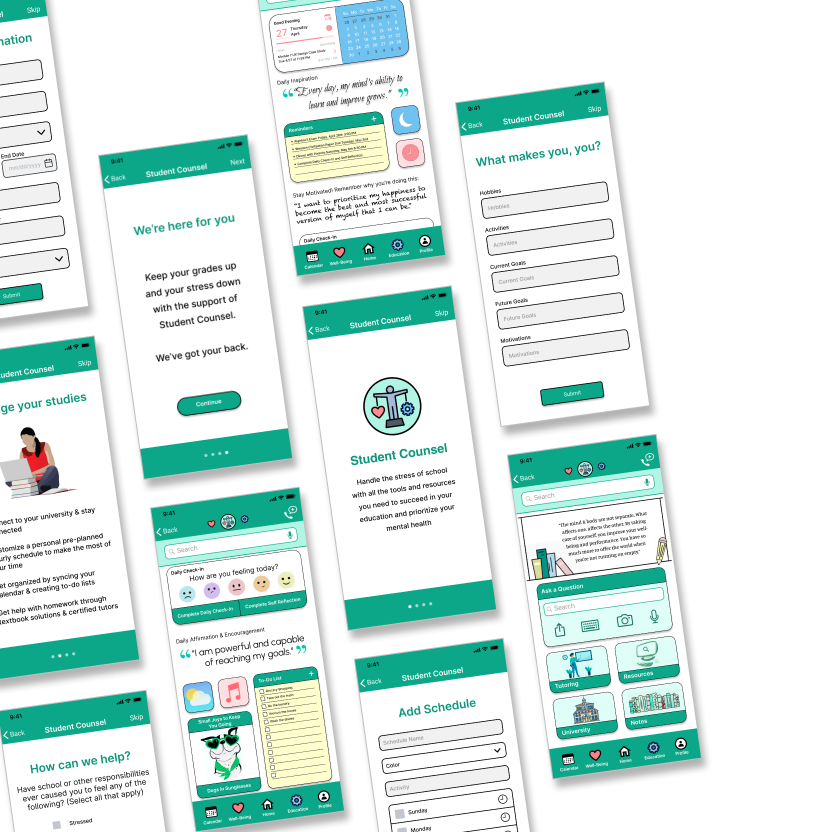
Student Counsel
Student Mental Health App Case Study
Student Counsel
Student Mental Health App Case Study
Student Mental Health App Case Study
UX/
UI Design Challenge
Project Overview
An independent project combining all UX/UI skills to develop an imaginative and unique interface. Discover, define, develop, and deliver a brand new mobile application by emphathizing with your users and using the design process to research, prototype, test, and validate a solution to a real, clearly identified challenge users’ face in their every day lives.
Problem
Students are often stressed and anxious from the pressure and demands of school. They find it challenging to manage their time and stay motivated, however most students have not utilized any mental health resources.
Solution
Create an app that helps students with time management, organization, and motivation that also prioritizes mental health and provides encouragement and immediate and anonymous access to mental health resources.
Project Type
Timeline
My Roles
Platform
Tools Used
1
2
3
4
5
6
7
1
2
3
4
5
6
7
User Interviews
I began my research by conducting three interviews in the interest of learning what students struggle with in college, how school affects mental health and self care, and what would helo reduce stress and improve mental health.
I surveyed three participants total between the ages of 21-29, who are currently enrolled in, have recently graduated from, or have recently attended a university.
From these interviews, I discovered a common theme that most students academic performance and mental health are affected by stress due to poor time management and procrastination. However, most students were reluctant to seek professional help.
“I was so nervous to seek help because of stigmas and it’s daunting to make an appointment. I wish I could just click on something to talk to someone.”
- Rhett R.
“There’s a lot of pressure to maintain grades & keep up with my peers. I did breathing exercises to calm me down when I was stressed or anxious.”
- Betsy R.
“It’s hard to focus on your health when you’re in school. I can’t find balance and I struggle with time management so I never have time for myself.”
- Amy B.
Affinity Diagram
From my interview insights, I created an affinity diagram to see what my users had in common. Doing this helped me to determine my target audience and also allowed me to see what the biggest pain points are that my users encounter.
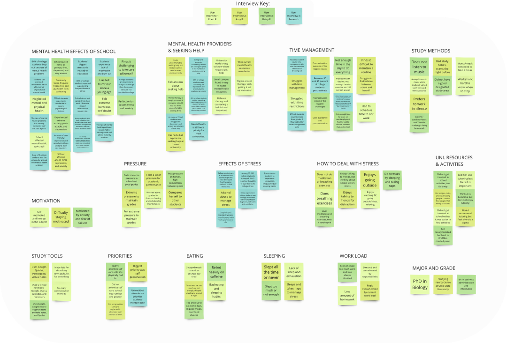Further Analysis
In addition to interviews, I also conducted a survey in order to gain more quantitative data relating to how students’ mental health is affected by the stress of school.
Has school or homework ever caused you to feel any of the following?
While surveying college students, I found that most students are affected negatively & 100% of students experience stress relating to school & homework.
Has stress affected your education or performance in school?
Out of those students, two thirds of them felt that strress from school affected their academic performance and education.
Has school ever affected you in any of the following ways?
There was also a large amount of students who felt anxiety and exhaustion from school, & over 90% of students said school affected their mental health.
Competitor Analysis
Performing a competitor analysis allowed me to learn the ins and outs of how my competition opperates and identify their strengths and weaknesses. This helped me to keep up with trends and guarantee that my product meets or exceeds industry standards and expectations. I chose to analyze MyStudyZen, Sezzi, and Mindfulness and Meditation.
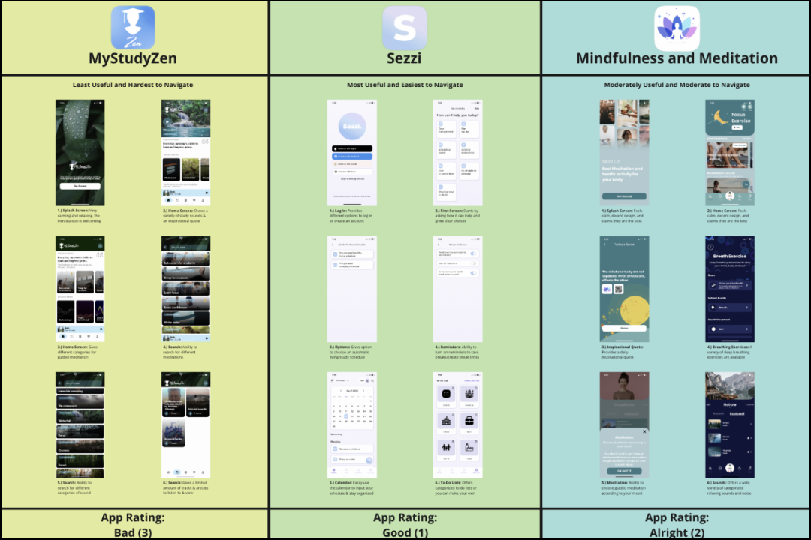1
2
3
4
5
6
7
Personas
Before conducting my research, I created a proto persona based off my assumptions of who my users are. After analyzing my data, I used my results to create a user persona based off the information I gathered from my research.
Proto Persona
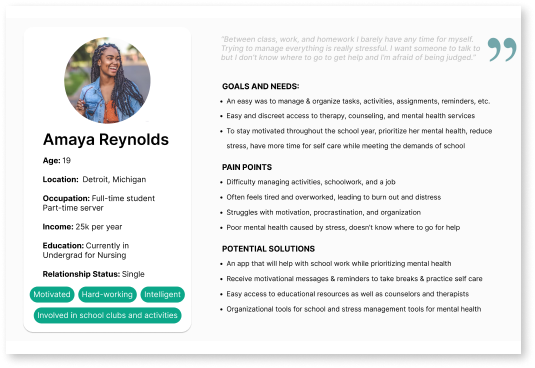User Persona
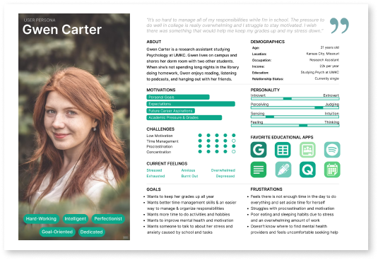Empathy Map
To further empathize and get a better understanding of my target audience, I created an empathy map imagining what my users might say, do, think, and feel. By recognizing the biggest pain points and prioritizing their needs, I was able to create gains for my users by visualizing potential solutions to the challenges they face when trying to take care of their well-being while in school.
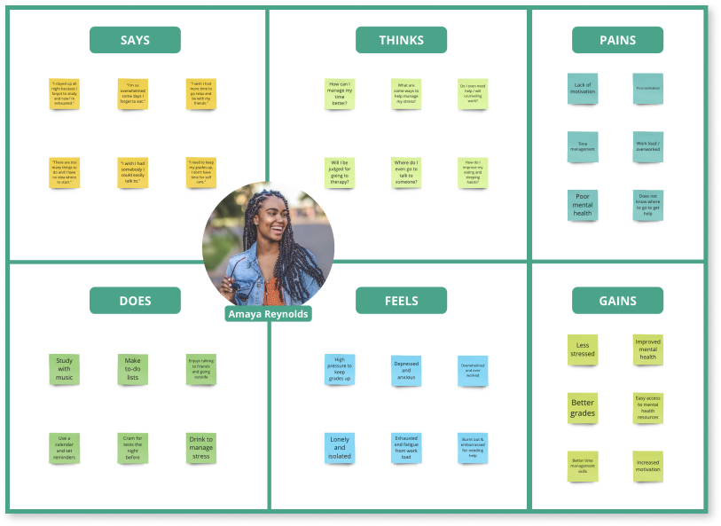1
2
3
4
5
6
7
User Insight Statement
Students are often stressed & anxious from the pressure and demands of school. They find it challenging to manage their time and stay motivated. I believe the stress of school affects students’ mental health, but students are uncomfortable and reluctant to seek out help. I might be able to help by aiding students with time management, organization, & motivation while prioritizing their mental health by providing them with encouragement and anonymous access to mental health resources. Doing this will reduce students stress & improve mental health; resulting in improved academic performance.
How Might We
How might we assist travelers so that our users are successful based on the following measurable criteria.
Problem Statement
My app was designed to reduce the stress college students experience by providing them with all the tools they need to succeed in their education while prioritizing mental health & self care by giving them easy & discreet access to mental health resources.
How Might We
I Like, I Wish, What If
1
2
3
4
5
6
7
Journey Map
Value Proposition
Storyboard
User Scenario
1
2
3
4
5
6
7
User Flow
I first created a detailed user flow to layout my navigation and show the structure of how pages are prioritized, linked, & labeled. By mapping out this experience I got an idea of how users would move through the app. I gained a deeper understanding of user decisions, enabling me to strategize and prioritize elements required for the optimal user experience. This approach helped me to create an efficient interface design that meet user’s needs by streamlining their journey and guaranteeing a positive outcome.
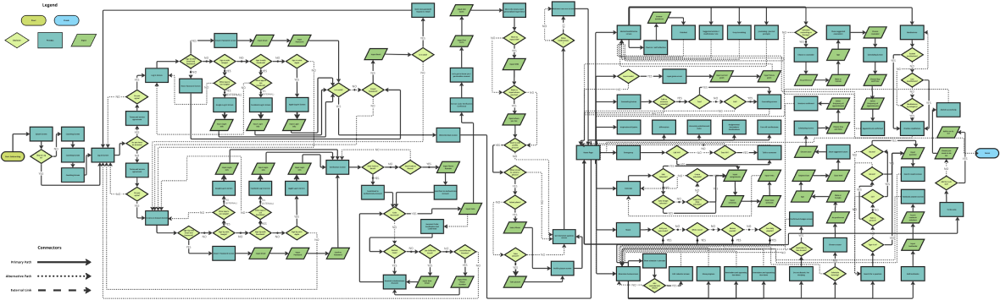Sketches
The design process proceeded with paper wireframe sketches in order to get a clearer vision of content and information layout across various screens. This allowed me to explore possibilities, easily make iterations, refine my design, evaluate the composition, and ensure the final screens combine the best elements for the best user experience. The logo was later changed.
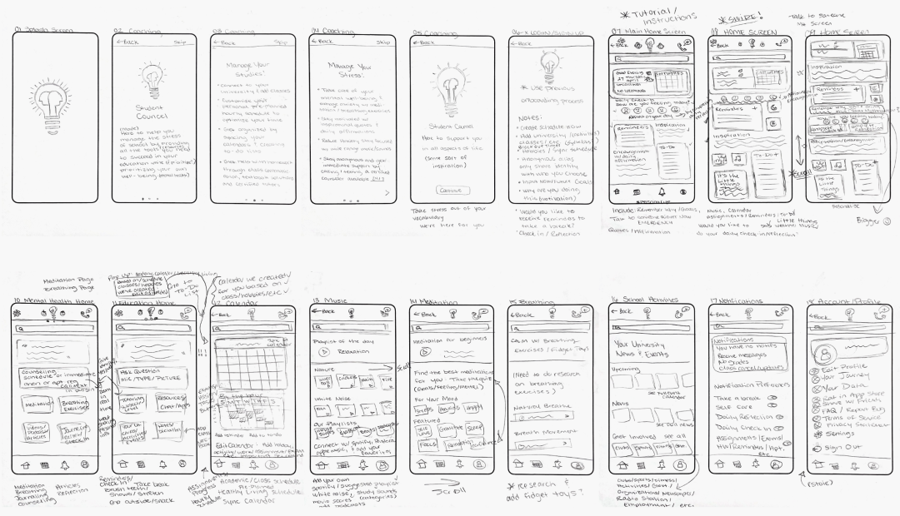Digital Wireframes
Wireframes were created with minimal color usage in order to prioritize user experience, maximize usability, & functionality.
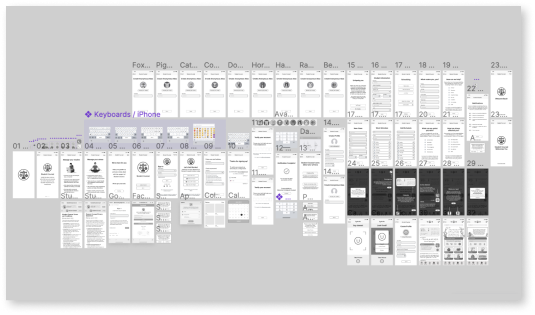Clickable Prototype
For testing purposes, I adapted my wireframes into a digital low-fidelity prototype to be introduced to potential users.
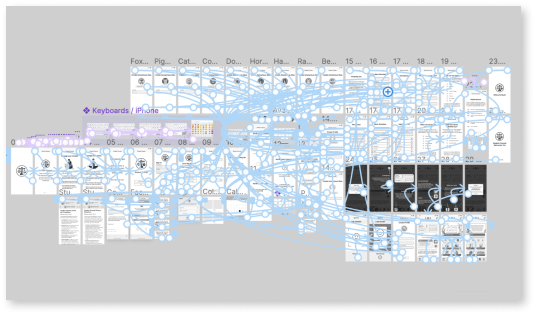1
2
3
4
5
6
7
Guerrille User Testing
To discover any usability issues, I presented my app to the public for the first time for testing to get valuable feedback. During these tests, I asked my participants to complete three tasks, requesting they think aloud & describe what they’re doing, seeing, and thinking during their experience while using the app. The scenarios given for users to complete are as follows:
Scenario 1
You just downloaded Student Counsel but you want to remain anonymous so you need to create an alias. Please create an accoun & select an avatar.
Scenario 2
You want to personalize your app. Please choose to personalize your experience, add your information, input schedules, & answer questions.
Scenario 3
You reach the home page. Follow the instructions to navigate around the home screen. Please tell me how you feel about the app’s appearance.
Test Results Analysis
After conducting user testing, I analyzed the results to see where my prototype met expectations and where it fell short and could be improved. All participants were able to complete all three tasks. Overall, the feedback was positive with only a few comments and suggestions pertaining to the mood buttons, check box functionality, button size, and some minor glitches.
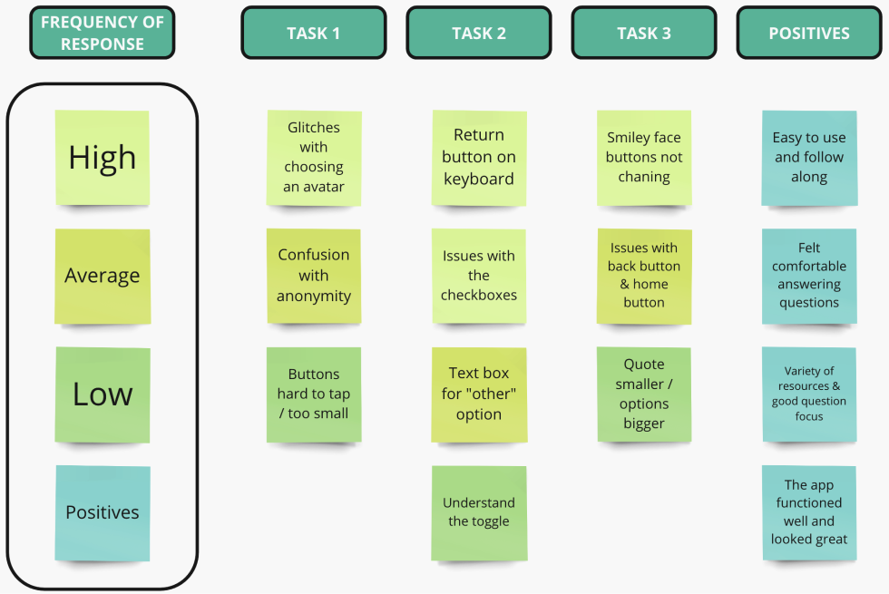Iterations and Additional Elements
Once user testing was completed, iterations were made and incorporated into the iOS mockups. Using the feedback I got from the tests, I adjusted the mood buttons, fixed the glitches and checkboxes, added color, and programmed the return button on the keyboard in order to add more elements to develop my app and make it more user-friendly.
1
2
3
4
5
6
7
Final Prototype
To conclude this project, I refined my prototype in both funcitonality & design to ensure the best experience is achieved in hopes of making it easy for students to prioritize mental health & succeed academically.
Key Takeaways
As a college student, I know how much school can affect mental health. My research showed me what students struggle with and helped me to come up with a solution to those pain points. I was able to create a persona I really connected with, & by analyzing my users, I determined what features would be most beneficial to include in my app. Competitor analysis gave me useful examples and inspiration for my own app. User testing feedback was beneficial to fix any bugs and make my app more user friendly. Overall my research supported my hypothesis and made me realize how hard it is for students to prioritize self care while they’re in school I hope that this project helped to spread mental health awareness and show the stress students experience in school.
Student Counsel
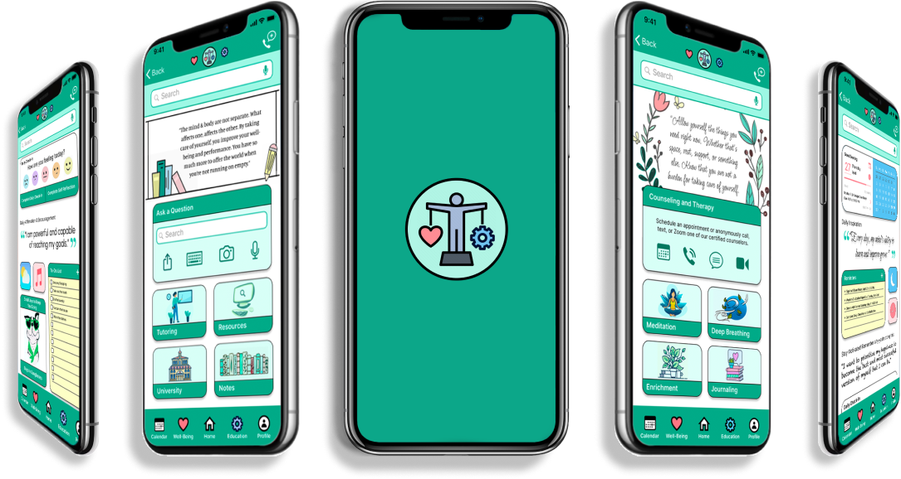